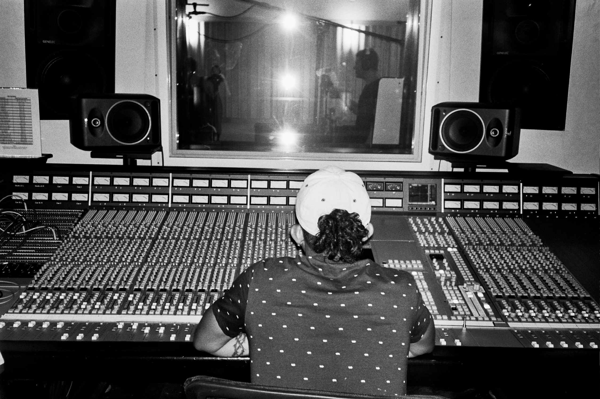

Music Career
"Saint" Gabriel Vasquez is a Staten Island-based audio engineer and music entrepreneur. Graduating from SAE Institute in Manhattan, NYC, Gabriel has spent hundreds of hours mixing and mastering artists of all genres. He currently works at ET Studios and leads the musical collective, High Power Studios.

Gabriel began his musical career as a member of the world-renouned, PS22 Elementary School Chorus. The group had immense success appearing on the Today Show and performing at the Grammy's. After several years away from music, Gabe started recording rap records with his neighbor Omar, which once again sparked his love for collaborating with talented artists. "Saint Gabriel" is currently working on his first studio album entitled "Momma Raised a Saint".
Modeling

Working with creative Ben Smith, Gabriel has blossomed into a very talented model. Naturally trained through his life experiences, Gabriel credits his mom for his honest and genuine look. His modeling skills have taken him across the world, from Parisian apartments to East Hampton beaches.